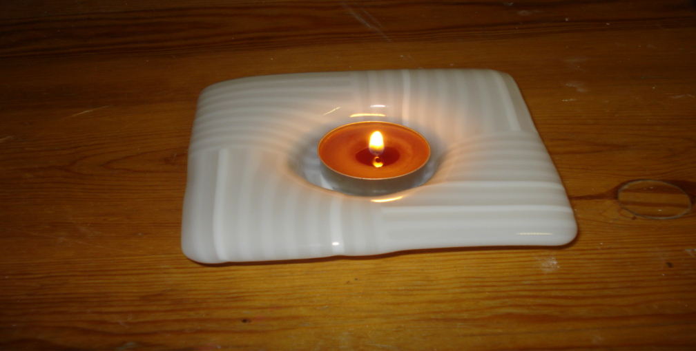

|
|
Lasin sulatus on lasin muovaamista lämmön avulla
lasi- tai keramiikkauunissa.
Tämän sivuston tarkoituksena on opastaa lasin sulatukseen uunissa.
Alue on kiehtova mutta laaja.
Jokainen joutuu etsimään oman polkunsa ja oman kiinnostuksensa mukaiset kohteet.
Olen yrittänyt madaltaa aloittelijan eteen tulevia kynnyksiä
mutta vasta sinun oma kokemuksesi tallaa tien tasaiseksi.
Mukana on tienviittoja (linkkejä) toisiin kohtiin
tai ulkoisille sivuille, jotka opastavat syvemmälle
tai johonkin nähtävyyteen.
Sivut on jaettu kahteen osaan:
OSA 1 Tutustumiskierros
joka antaa yleiskuvan aiheesta
OSA 2 Kartasto
jonka avulla voi edetä syvemmälle asioihin.
English Menu Some useful pages in English
|
|

Talven valoa Winter Light
|
Copyright 2007,2011 Lauri Levanto
URL http://lauri.lsd.dk/lasi/
Sivuja saa kopioida sähköisesti tai tulosteina, ehdolla että sivun
copyright lauseke on mukana. Jos kuvan tai tekstiosion yhteydessä on
lähdemaininta tekijästä ja/tai kuvaajasta
on häneltä pyydettävä erikseen lupa.
Kuvissa esiintyvät teokset ovat tekijänoikeuden suojaamia, eikä niitä saa kopioida myyntiin
|
|
{kind=link}